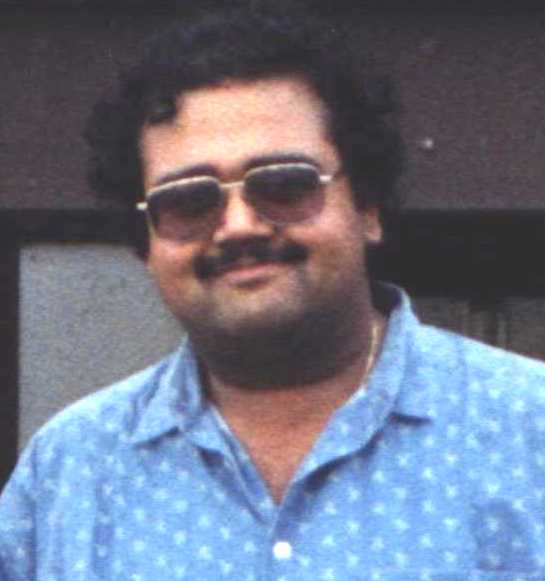

B. Ravindran
Associate Professor
Research Areas: Reinforcement
Learning, Machine Learning, Hierarchical Learning
Architectures, Developmental Models of Learning, Model Minimization,
Data Mining, Information Extraction, Text Summarization,
Information Filtering, Knowledge Representation and Generalization.
The 2009 IITM
summer Fellowhsip program for third year under graduate students from
other Institutions is now on. I encourage good students looking for summer
interships to apply to this program.
- Education:
- Ph.D., Computer Science, University of Massachusetts, Amherst, 2004
- M.Sc.(Engg.), Computer Science and Automation, Indian Institute of Science, Bangalore, 1996
- B.E., ECE, Madurai Kamarajar University, 1993
Associated Labs:
- Interactive Intelligence
Laboratory - Reconfigurable and Intelligent Systems Engineering Group.
- Artificial Intelligence and
Databases
Courses:
- Current
- Use the Department CMS for the latest course pages.
- CS1300 - Introduction to CSE
- CS1100 - Computational Engineering - Administration
- CS597 - M. Tech Seminar
- CS637 - Natural Language Processing
- CS670 - Reinforcement Learning
- Past
- CS350 - Operating Systems
- CS672 - Data Mining
- CS673 - Probabilistic Reasoning in AI
- CS110 - Computational Engineering
Students:
- P. Swapna Raj (PhD-Project)
- M. Sai Ramesh (MS)
- Balaji Lakshmanan (MS)
- R. Deepak (Masatran) (MS)
- Abhishek Ghose (MS)
- A. Yousuf (MS)
- Pavan Kumar Yara (MS-External) (Jointly with Dr. R. Ramasheshan, Cognizant Technologies, Chennai)
- D. R. Lakshminarasimhaiah (MS-External) (Jointly with Dr. Dipti Deodhare, CAIR)
- S. Shivashankar (MS-Project)
- Priya Anna Mani (MS)
- Karthick Rangadurai (MS-Project)
- K. V. N. Pradyot (MS-Project)
- Girish Rao (MTech)
- Bala Murali Krishna (MTech)
- Mustafa Shake (MTech)
- Sanjay Karanth (Dual Degree-EE)
- Angshu Rai (Dual Degree)
- Aashish Dattani (Dual Degree)
- Jai Karnik (BTech-EE)
- Aditya Shankar (BTech)
- Komal Prajapathi (BTech)
- P. Prathyush (BTech)
Past Students:
- PhD
- M. Saravanan
- Thesis title: Ontology-Based Retrieval and Automatic Summarization of Legal Judgments
-
- MS
- Sriram Raghavan
- Thesis title: Distributed Algorithms for Hierarchical Area Coverage
- B. H. Sreenivasa Sarma
- Thesis title: Intelligent Tutoring System using Reinforcement Learning
- Vimal Mathew
- Thesis title: Automated Spatio-Temporal Abstraction in Reinforcement
Learning
- Shravan Matthur Narayanamurthy
- Thesis title: Abstraction using Symmetries in Markov Decision Processes
- Aakanksha Gagrani (Jointly with Prof. Koshy Varghese, CE, IITM)
- Thesis title: Image Modeling using Hierarchical Conditional Random Fields
- Dinakar Jayarajan (Jointly with Dr. Dipti Deodhare, CAIR-DRDO)
- Thesis title: Using Semantics in Document Representation: A Lexical Chains
Approach
- M.Tech
- B.Tech
Contact Information:
BSB 349
Department of Computer Science and Engineering
Indian Institute of Technology Madras
Chennai - 600 036
Ph: +91-44-2257 4370
Fax: +91-44-2257 4352
E-mail: ravi AT cse.iitm.ac.in
Publications
By Topic
2010
- Aadithya, K. V. and Ravindran, B. (2010) "Game Theoretic Network
Centrality: Exact Formulas and Efficient Algorithms". To appear in the
Proceedings of the Ninth International Conference on Autonomous Agents and
Multiagent Systems (AAMAS 2010).
2009
- Kate, K. and Ravindran, B. (2009) "Epsilon Equitable Partition: A
Positional Analysis Method for Large Social Networks". To appear in the
Proceedings of 15th International Conference on Management of Data (COMAD
2009). PDF
- Shivashankar, S., Ravindran, B., and Srinivasa Raghavan, N. R. (2009)
"Text mining of Internet content: The bridge connecting product research
with customers in the digital era". In Product Research: The Art and Science Behind Successful Product Launches,
Srinivasa Raghavan, N.R. and Cafeo, J. A. (Eds.), Nov. 2009. Springer. (Book
Chapter)
- Mohamed, M., Chakravarthy, V. S., Subramanian, D., and Ravindran, B.
(2009) "The Role of Basal Ganglia in Performing Simple Reaching Movements:
A Computational Model". To appear in the Proceedings of the 14th
Conference of the International Graphonomics Society (IGS09).
- Bahuguna, J., Ravindran, B., and Krishna, K. M. (2009) "MDP based
Active Localization for Multiple Robots". In the Proceedings of
the Fifth Annual IEEE Conference on Automation Science and Engineering (CASE
2009), pp. 635-640. IEEE Press. PDF
- Malpani, A., Ravindran, B., and Murthy, H. A. (2009) "Personalized
Intelligent Tutoring System Using Reinforcement Learning". Presented at
the Multidisciplinary Symposium on Reinforcement Learning.
- Mohamed, M., Chakravarthy, V. S., Subramanian, D., and Ravindran, B.
(2009) "The Role of Basal Ganglia in Performing Simple Reaching Movements:
A Computational Model". Presented at the Multidisciplinary Symposium on
Reinforcement Learning. (Shorter version of the paper at IGS09.)
- Saravanan, M., Ravindran, B., and Raman, S. (2009) "Improving Legal
Information Retrieval Using Ontological Framework". In Artificial
Intelligence and Law, Online
14-May-2009. (In print) Volume 17, Issue 2 (2009), pp. 101-124. Springer.
2008
- Swapna Raj, P. and Ravindran, B. (2008) "Personalized Web-page
Rendering System". In the Proceedings of the Fourteenth
International Conference on Management of Data (COMAD), pp. 30-39. PDF
- Arora, R. and Ravindran, B. (2008) "Latent Dirichlet Allocation
and Singular Value Decomposition based Multi-Document Summarization". In
the Proceedings of the Eighth IEEE International Conference on Data Mining
(ICDM 2008), pp. 713-718. IEEE Press. PDF
- Balaji, L. and Ravindran, B. (2008) "Transfer Learning with
Differently-abled Robots". In the IROS Workshop on Robotics Challenges
for Machine Learning.
- Arora, R. and Ravindran, B. (2008) "Latent Dirichlet Allocation
Based Multi-Document Summarization". In the Proceedings of the Second
Workshop on Analytics for Noisy Unstructured Text Data (AND 2008), pp. 91-97.
ACM Press. PDF (Best Student Paper)
- Cheboli, D. and Ravindran, B. (2008) "Detection of keratoconus by
semi-supervised learning". In the ICML/UAI workshop on Machine Learning in
health care applications. PDF
- Narayanamurthy, S. M. and Ravindran, B. (2008) "On the Hardness of
Finding Symmetries in Markov Decision Processes". In the
Proceedings of the Twenty Fifth International Conference on Machine Learning
(ICML 2008), pp. 688-696. AAAI Press. PDF
(Associated Technical Report PDF)
- Ray, A., Kumar, V., Ravindran, B., Dr. Lingam Gopal, and Dr. Verma, A.
(2008) "Machine Learning to predict the incidence of Retinopathy of
Prematurity". In the Proceedings of the Twenty First Florida AI
Research Society Conference (FLAIRS 2008), pp. 300-305. AAAI Press. PDF
- Swaminathan, P. and Ravindran, B. (2008) "Co-SOFT-Clustering: An
Information Theoretic approach to obtain overlapping clusters from
co-occurrence data". In the Proceedings of the Twenty First Florida AI
Research Society Conference (FLAIRS 2008), pp. 320-321. AAAI Press. PDF
- Sriram, R. and Ravindran, B. (2008) "Successive Refinement
Algorithms for Distributed Area Coverage Using Mobile Robots".
In the Proceedings of ACM Compute 2008, Article No. 20. ACM Press.
- Jayarajan, D., Deodhare, D., and Ravindran, B. (2008) "Lexical
Chains as Document Features". In the Proceedings of the Third
International Joint Confernce on Natural Language Processing, IJCNLP 2008, pp. 111-117. PDF
- Saravanan, M., Ravindran, B., and Raman, S. (2008) "Automatic
Identification of Rhetorical Roles using Conditional Random Fields for Legal
Document Summarization ". In the Proceedings of the Third
International Joint Confernce on Natural Language Processing, IJCNLP 2008,
pp. 481-488. PDF
2007
- Saravanan, M., Ravindran, B., and Raman, S. (2007) "Legal Ontology
for Query Enhancement". In the Proceedings of the Twentieth
Annual Conference on Legal Knowledge and Information Systems(JURIX 2007),
pp.171-172. IOS Press. PDF
- Sarma, B.H.S. and Ravindran, B. (2007) "Intelligent Tutoring System
using Reinforcement Learning to Teach Autistic Students". In the
Proceedings of the Conference on Home/Community Oriented ICT for the Next
Billion (HOIT 2007), pp. 65-78. Springer.
PDF
- Sriram, R. and Ravindran, B. (2007) "Homogeneous Hierarchical
Composition of Areas in Multi-Robot Area Coverage". In the
Proceedings of the Seventh Symposium on Abstraction, Approximation, and
Reformulation (SARA 2007), pp. 300-313, LNAI 4612. Springer.
PDF
- Awasthi, P., Gagrani, A., and Ravindran, B. (2007) "Image
Modeling using Tree Structured Conditional Random Fields". In
the Proceedings of the Twentieth International Joint Conference on Artificial
Intelligence (IJCAI 2007), pp. 2060-2065. AAAI Press.
PDF
- Narayanamurthy, S. M. and Ravindran, B. (2007) "Efficiently
Exploiting Symmetries in Real Time Dynamic Programming". In the
Proceedings of the Twentieth International Joint Conference on Artificial
Intelligence (IJCAI 2007), pp. 2556-2561. AAAI Press.
PDF
- Ravindran, B., Barto, A. G., and Mathew, V. (2007) "Deictic Option
Schemas". In the Proceedings of the Twentieth International
Joint Conference on Artificial Intelligence (IJCAI 2007), pp. 1023-1028.
AAAI Press. PDF
- Jayarajan, D., Deodhare, D., Ravindran, B., and Sarkar, S. (2007)
"Document Clustering using Lexical Chains". In the Proceedings of the
Workshop on Text-Mining & Link-Analysis (TextLink 2007). PDF
- Sriram, R. and Ravindran, B. (2007) "Profiling Pseudonet
Architecture for Coordinating Mobile Robots". In the Proceedings of the
Second IEEE International Conference on COMmunication System softWAre and
MiddlewaRE (COMSWARE 2007). IEEE Press. PDF
2006
- Saravanan, M., Ravindran, B., and Raman, S. (2006) " Improving
Legal Document Summarization using Graphical Models " In the Proceedings
of the Nineteenth Annual Conference on Legal Knowledge and Information
Systems(JURIX 2006), pp. 51-60, IOS Press. PDF
- Awasthi, P., Rao, D. G., and Ravindran, B. (2006) "Part Of Speech
Tagging and Chunking with HMM and CRF". In the Proceedings of NLPAI
Machine Learning Contest 2006 , Mumbai, India.
- Gagrani, A., Gupta, L., Ravindran, B., Das, S., Roychowdhury, P., and
Panchal, V. K. (2006) "A Hierarchical approach to Landform Classification
of Satellite Images using a Fusion Strategy". In the Proceedings of Fifth
Indian Conference on Computer Vision, Graphics, and Image Processing (ICVGIP
2006).
- Saravanan, M., Raman, S., and Ravindran, B. (2006) "A Probabilistic
Approach to Multi-Document Summarization for Generating a Tiled Summary".
In International Journal of Computational Intelligence and Applications, Vol.
6, No. 2, June 2006, pp. 231-244. Imperial College Press. (This is an expanded
version of the conference paper below.) PDF
2005
- Saravanan, M., Raman, S., and Ravindran, B. (2005) "A Probabilistic
Approach to Multi-Document Summarization for generating a Tiled Summary".
In the Proceedings of the International Conference of Computational
Intelligence and Multimedia Applications (ICCIMA '05).
- Siva Soumya, E., Manimegalai, R., Muralidharan V., Ravindran, B.,
Kamaoti, V., and Bhatia, D. (2005) "Placement and Routing for 3D-FPGAs
using Reinforcement Learning and Support Vector Machines". In the
Proceedings of the Eighteenth International Conference on VLSI Design. PDF
- Saravanan, M., Ravindran, B., and Raman, S. (2005) "A Review of
Automatic Summarization". Presented in the Workshop on Optical character
Recognition with workflow and Document Summarization, IIIT Allahabad, March
19-20.
- Saravanan, M., Ravindran, B., and Raman, S. (2005) "Learn to Teach
Autistic Children". Presented in the National Conference on Computational
Intelligence (St. Joseph's College, Trichy), Feb 16-18.
2004
- Ravindran, B. and Barto,
A. G. (2004) "Approximate Homomorphisms: A Framework for Non-exact
Minimization in Markov Decision Processes". In the Proceedings of the
Fifth International Conference on Knowledge Based Computer Systems (KBCS 04).
PDF
- Ravindran, B. (2004) "An Algebraic Approach to Abstraction in
Reinforcement Learning". Doctoral Dissertation, Department of Computer
Science, University of Massachusetts, Amherst MA. PDF
2003
- Ravindran, B. and Barto,
A. G. (2003) " Relativized Options: Choosing the Right
Transformation". In the Proceedings of the Twentieth International Conference
on Machine Learning(ICML 2003), pp. 608-615. AAAI Press. PDF
- Ravindran, B. and Barto,
A. G. (2003) " SMDP Homomorphisms: An Algebraic Approach to
Abstraction in Semi Markov Decision Processes". In the Proceedings of
the Eighteenth International Joint
Conference on Artificial Intelligence (IJCAI 03), pp. 1011-1016. AAAI
Press. PDF
- Ravindran, B. and Barto,
A. G. (2003) " An Algebraic Approach to Abstraction in Reinforcement
Learning". In the Proceedings of the Twelfth Yale Workshop on Adaptive and
Learning Systems, pp. 109-114. Yale University. PDF
1994-2002
- Ravindran, B. and Barto,
A. G. (2002) " Model Minimization in Hierarchical Reinforcement
Learning". In the Proceedings of the Fifth Symposium on
Abstraction, Reformulation and Approximation (SARA 2002), pp.196-211,
LNCS, Springer
Verlag. (Slides from presentation: PPT) PDF
- Ravindran, B. and Barto, A. G. (2001) "
Symmetries and Model Minimization of Markov Decision Processes". Computer
Science Technical Report 01-43, University of Massachusetts, Amherst, MA. PDF
- Sutton, R. S., Singh, S., Precup, D. and Ravindran, B.
(1999) " Improved Switching among Temporally Abstract Actions". In
Advances in Neural Information Processing Systems 11 (Proceedings of NIPS'98),
pp.1066-1072. MIT Press. PDF
- McGovern, Amy , Precup, Doina, Ravindran, B., Singh, Satinder and Sutton, Richard S. (1998) "
Hierarchical Optimal Control of MDPs", Proceedings of the Tenth Yale
Workshop on Adaptive and Learning Systems, pp.186-191. PDF
- Ravindran, B. (1996) "Solution of Delayed Reinforcement Learning
Problems having Continuous Action Spaces", Master's Thesis,
Department of Computer Science and Automation, Indian Institute of Science,
Bangalore, India. PDF
- Keerthi, S. S. and
Ravindran, B. (1996) " C3: Reinforcement Learning". In Handbook Of Neural
Computation, E. Fiesler and R. Beale, Editors, Oxford University Press,
U. K. PDF
- Keerthi, S. S. and
Ravindran, B. (1994) " A Tutorial Survey Of Reinforcement Learning".
In Sadhana (Proceedings of the
Indian Academy of Sciences), Vol. 19, Dec. 1994, pp. 851-889. PDF
For students writing to me from other colleges for summer projects: I
do not
encourage students to spend their second year vacations doing summer projects.
So do not expect a response from me. Third year students, please try through
the summer
fellowship program when advertised by the Institute.